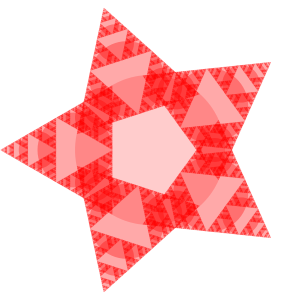

from joy import *8 Homework 08
8.1 Problem 1
Write a recursive function circle_clouds to draw the figure shown below.
The function should take two arguments r, the radius of the circle at the centre and n, the number of times to repeat the recursive process. For each turn, it draws a circle in the centre and draw a smaller version of itself with half the size on the left and right ends.
Hint: Use fill="white" to fill the circles.
circle_clouds(r=75, n=5)
r=50
a=circle(r=r, fill="white")
b=circle(x=-r, r=r/2, fill="white")
c = circle(x=r, r=r/2, fill="white")
a+b+c
def circle_clouds(r, n):
a=circle(r=r, fill="white")
if n>1:
b=circle_clouds(r=r/2, n=n-1)|translate(x=-r)
c = circle_clouds(r=r/2, n=n-1)|translate(x=r)
return a+b+c
else:
return acircle_clouds(75, 7)8.2 Problem 2
What happens if you modify the above circle_clouds function to draw three smaller shapes, seperated by \(120\degree\) instead of two?
Can you write a function circle_clouds_3 to achive that?
How does the figure look like when you call circle_clouds_3(r=75, n=5)?
def circle_clouds_3(r, n, k=3):
a=circle(r=r, fill=color(255,0,0,1/k), stroke="none")
if n>1:
b=circle_clouds_3(r=r/2, n=n-1)|translate(x=-r)|repeat(k, rotate(360/k))
return a+b
else:
return acircle_clouds_3(75, 8, 10)
8.3 Problem 3
Write a program to draw the image below.
# your code here
8.3.1 Problem 4
Consider the following program.
circle(x=125, r=25) | repeat(3, rotate(30))c=circle(x=125, r=25)
c1=c
c2=c+(c1|rotate(30))
c2c3=c+(c2|rotate(30))
c3c4=c+(c3|rotate(30))
c4Can you implement the same without using the repeat transformation?
def recursive_circles(x, r, n, angle):
c = circle(x=x, r=r)
if n==1:
return c
else:
#cn=c+(cn-1|rotate(angle))
cn_1 = recursive_circles(x=x, r=r, n=n-1, angle=angle)
return c+(cn_1|rotate(angle))recursive_circles(x=100, r=25, n=9, angle=30)8.4 Problem 5
Consider the following program.
circle(x=100, r=50) | repeat(100, rotate(10) | scale(0.97))Can you implement the same without using the repeat transformation?
Hint: Try if you can write a function repeat_transform(shape, n, transform).
r=rotate(30)
rectangle()|rdef repeat_transform(shape, n, transform):
return shape|repeat(n, transform)repeat_transform(circle(x=100, r=50), 100, rotate(10)|scale(0.97))repeat_transform(circle(x=100, r=25), 3, rotate(30))def repeat_transform(shape, n, transform):
if n==1:
return shape
else:
#rn=shape+(rn-1|transform)
rn_1 = repeat_transform(shape, n-1, transform)
rn = shape+(rn_1|transform)
return rnrepeat_transform(circle(x=100, r=25), 3, rotate(30))
repeat_transform(circle(x=100, r=50), 100, rotate(10)|scale(0.97))8.5 Problem 6

As homework, do problems 3 and 6 using recursive functions.